Custom Airframe Manufacturing & Structural Validation
To comply with IMechE UAS Challenge regulation T2.4.5, I spearheaded the transition from outsourced carbon fiber sections to a fully in-house composite manufacturing workflow. This involved a rigorous R&D phase to replace standard primary/secondary spars and tail booms with custom-fabricated structures.
Flying Wing CAD - Spar Configuration
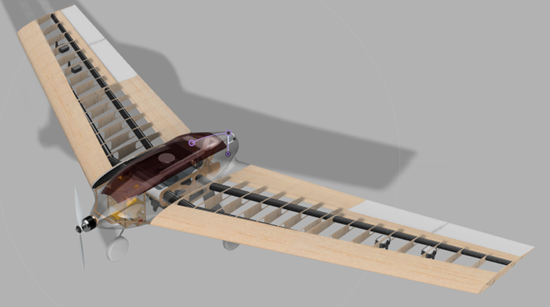
My iterative process began with wet-layup test pieces using 3D-printed moulds to evaluate quality. The final evolution was a circular cross-section spar optimized for medical UAV loading cases.
Spar Manufacturing Process
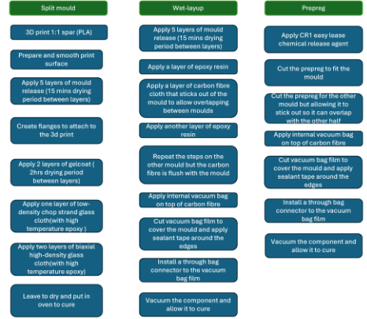
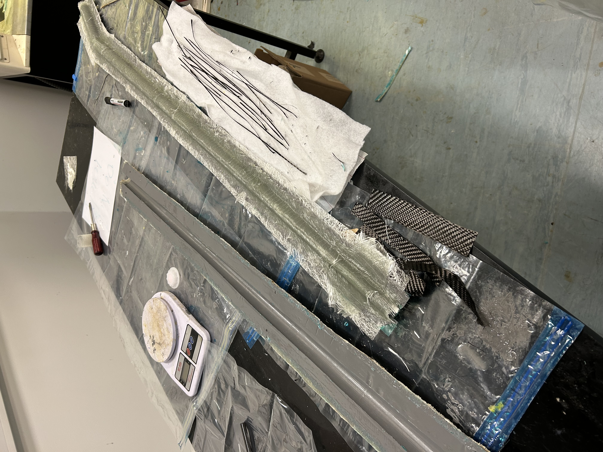
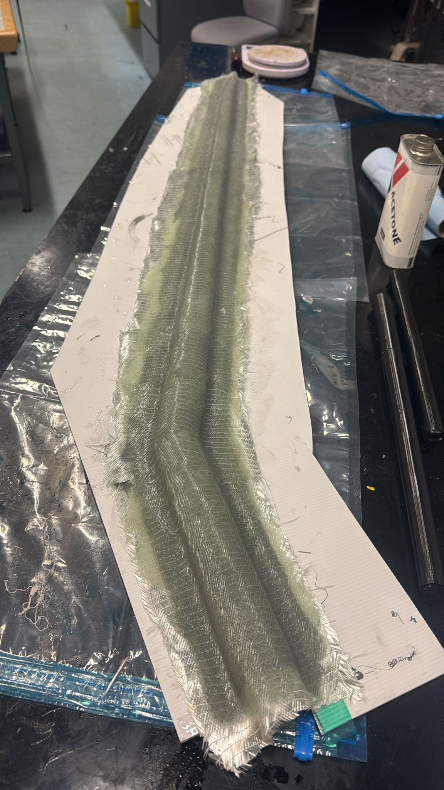

Carbon Fibre Spar Result
Test 1: Initial wet-layup validation.
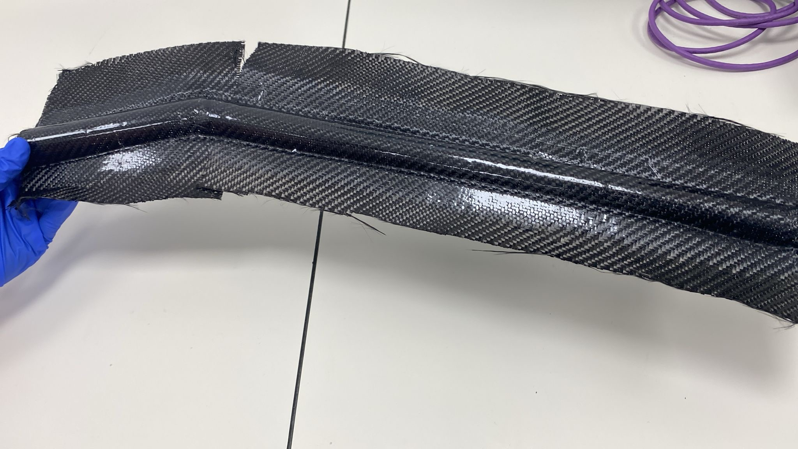
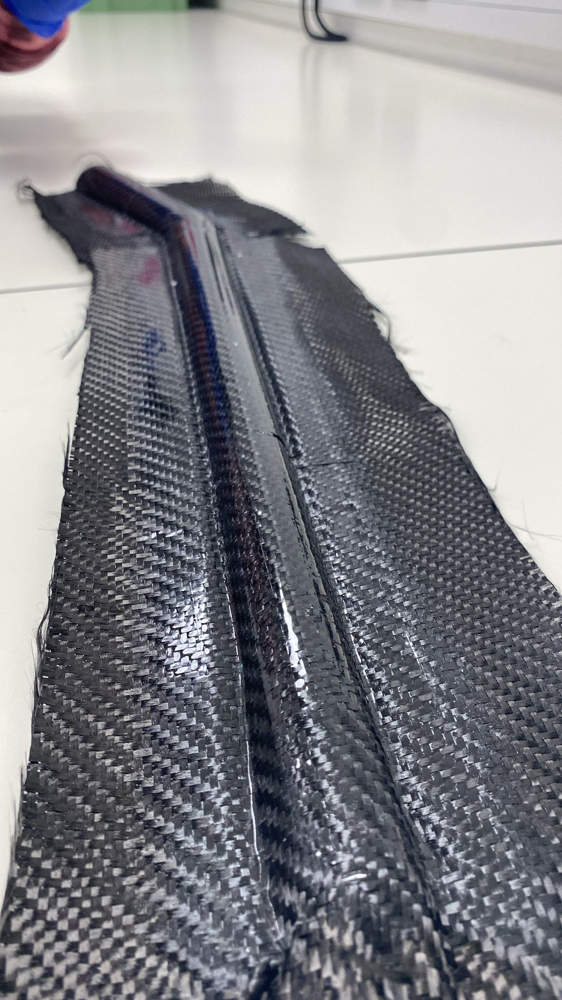
Test 2: Final structural assembly.
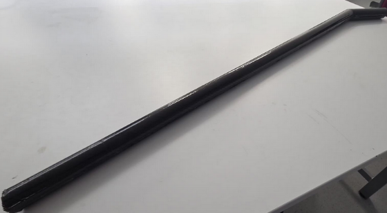
Bending Test: Withstood predicted 5.5G root bending moment. Total mass: 83g.
Composite Wings for Light Weight UAV
Tested EPS foam as a substitute for balsa ribs. While rigid, EPS proved too porous, absorbing excess epoxy during vacuum bagging. I wrapped the leading edge with carbon fibre to improve strength at the stagnation point and flow attachment.
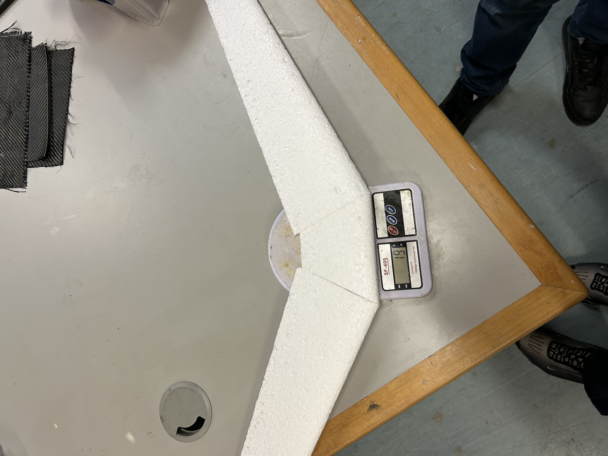
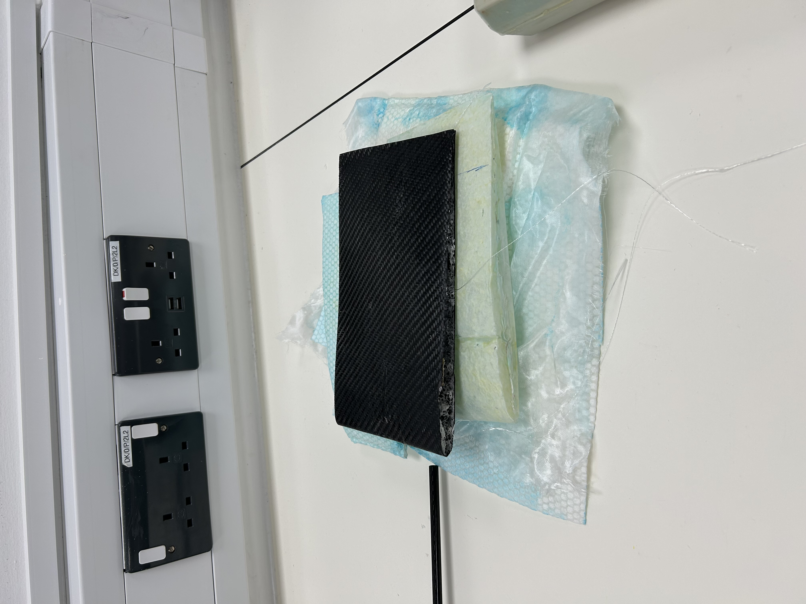

XPS Wing Evolution
Switched to high-density XPS foam, which offered significantly better surface finish and strength despite a slight weight increase.
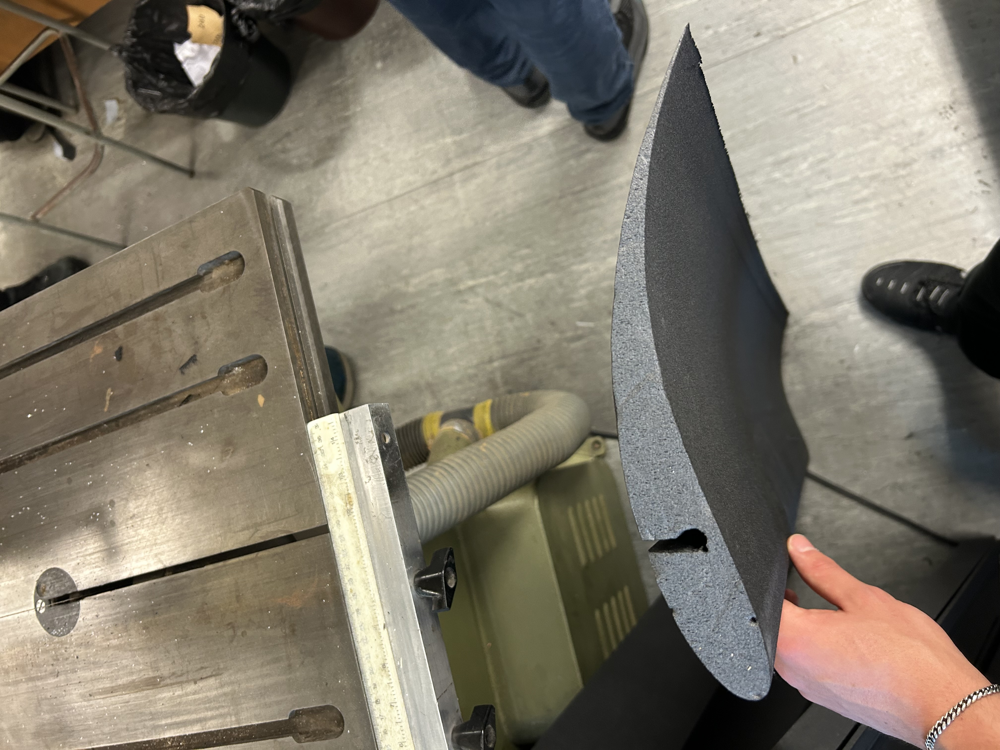

Vacuum Form & Electronics
Fuselage Vacuum Forming
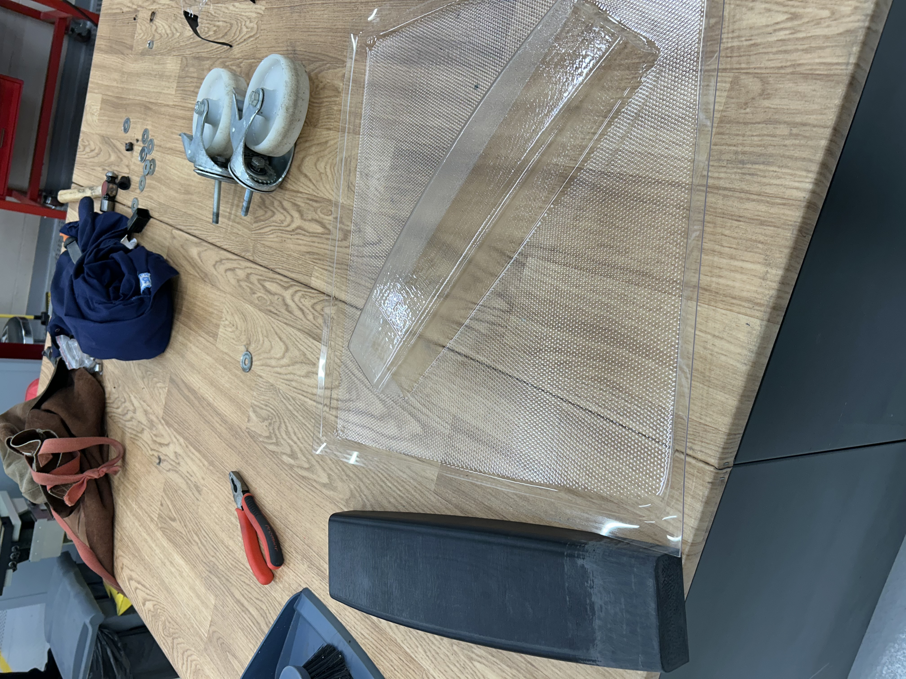
Electronics Stack
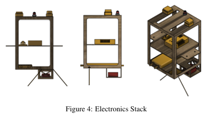
Modular stack featuring flight controller, LiDAR, and GPS. Mounted on vibration-isolating grommets with adjustable CG positioning.